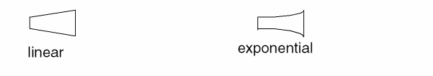

Transmission Line Taper Form
Use the Transmission Line Taper form to create a one-segment transmission line that connects two transmission lines of different width settings.
| Field | Description |
|---|---|
|
Sets the taper style you create:

|
|
|
Specifies the width of the taper ends in user units (typically microns). |
|
|
Sets the number of segments used in an exponentially tapered line. Environment variable: trlNPtsToPI |
Related Topics
Return to top